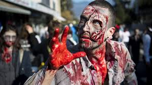

Pourquoi ce site ?
En créeant ce site, nous avons voulus faciliter la traque des humains GRRRR. En effet, nous avons toujours eu pour habitude de chasser en solitaire ou de manière totalement désorganisée, alors nous avons voulu changer ça en créant ce site qui vous permet de vous regrouper afin de former des clans et de chasser de manière plus efficace.
Alors profitez de notre site afin de montrer aux humains qui sont les patrons et que nous sommes plus fort qu'eux.
L'intêret du site
Grâce à ce site vous pourrez trouver les clans les plus proches de votre postition grâce à notre carte dynamique et chassez ensemble pour améliorer votre rendement mensuel. Vous observerez une amélioration de votre rendement dès le premier mois, nous vous le garantissons.
Vous en avez marre de chasser seul et de ne pas manger à votre faim ?
Nous avons pensé à vous !!!
En effet, vous pouvez proposer vos services à un clan afin de remédier à cela !
Notre histoire
Nous sommes cinq amis tout justes revenus d'Outre-tombe. Nous avions vite remarqué la difficulté de chasser les humains, surtout lorsqu'il nous manque un ou plusieurs membres. Ainsi nous proposons ce service dans le but d'aider le plus grand nombre de nos frères zombies afin que nous puissions avoir une meilleure qualitée de mort. Nous tenions également à vous remercier du soutient que nous avons reçu lors du processus, alors merci à tout les donateurs, tout ceux qui nous ont fournis des retours sur les problèmes su site, ce qui nous à permis de pousser notre projet à un stade que nous n'aurions jamais pû atteindre sinon. Car si la plupart d'entre vous ne nous aviez pas fourni en chaire humaine, nous n'aurions pas pû nous concentrer pleinement sur le projet. Bien que pas parfaite, nous espèrons que notre plateforme vous aidera à trouver le bonheur et nous comptons l'améliorer le plus tôt possible.
Merci à vous tous
Ils nous ont fait confiance !

Rachel P